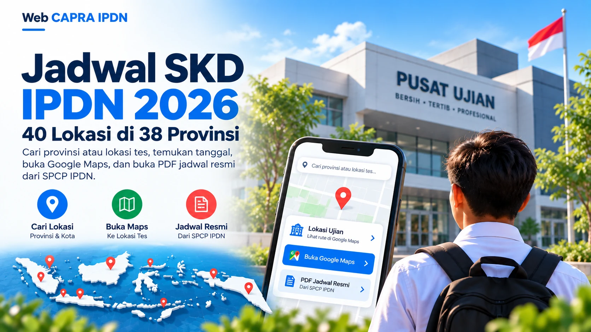
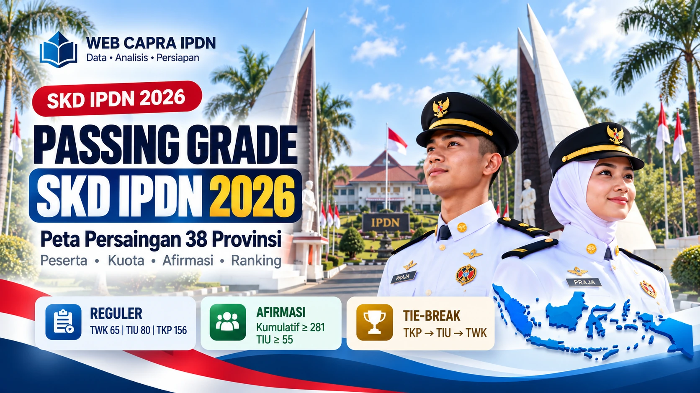

Jadwal SKD IPDN 2026: 40 lokasi di 38 provinsi
Cari provinsi, titik lokasi dan sesi. Buka Google Maps serta PDF jadwal peserta resmi SPCP.
📍 Lokasi & sesiBuka arsip jadwal →
Hasil Tes Kesehatan Tahap I sudah diumumkan pada 19 Oktober. Cek nama pada lampiran resmi provinsi, lalu persiapkan gladi jaringan 21 Oktober serta tes psikologi, integritas dan kejujuran 22 Oktober.
Informasi pasca-SKD dari pengumuman SPCP yang diperiksa 20 Oktober 2026, dilengkapi dokumen resmi, penjelasan praktis, serta panduan untuk tahapan berikutnya.

Panduan cek nama melalui 38 lampiran PDF resmi SPCP, langkah verifikasi hasil, dan tahap berikutnya.

Gladi jaringan 21 Oktober, pelaksanaan 22 Oktober, persiapan, dan tautan pedoman resmi panitia.

Timeline psikologi, penentuan akhir (pantukhir), pengumuman kelulusan, dan registrasi peserta.
Tahapan SKD telah selesai pada September 2026. Artikel ini dipertahankan sebagai referensi format ujian, lokasi, dan nilai ambang batas.

Cari provinsi, titik lokasi dan sesi. Buka Google Maps serta PDF jadwal peserta resmi SPCP.

TWK 65, TIU 80, TKP 156 plus peserta, kuota, afirmasi Papua, ranking dan tie-break.
Dokumen, identitas, pakaian, alat tulis, larangan CAT dan ketentuan waktu kedatangan.
Rangkuman jadwal resmi; tanggal mendatang adalah rencana dan dapat diubah panitia.
Tahap setelah hasil kesehatan: gladi jaringan 21 Oktober dan tes psikologi 22 Oktober. Periksa pengumuman panitia untuk jadwal personal.
SKD 2026 telah selesai pada September; materi ini tetap tersedia sebagai referensi pembelajaran.
Mulai dari format soal dan strategi yang sudah tersedia. Ini panduan belajar, bukan bank soal resmi.
Pahami target nilai TIU serta strategi mengerjakan soal yang menyita waktu.
Strategi TIU →Web CAPRA IPDN menggunakan situs SPCP IPDN sebagai rujukan primer. Informasi Web CAPRA IPDN tidak menggantikan ketentuan resmi.
✓ Pengumuman SPCP diperiksa 20 Oktober 2026; data artikel SKD lama memiliki tanggal verifikasi masing-masingBergabung dengan komunitas Web CAPRA IPDN untuk berdiskusi, berbagi informasi, dan mengikuti perkembangan persiapan seleksi bersama calon praja lainnya.